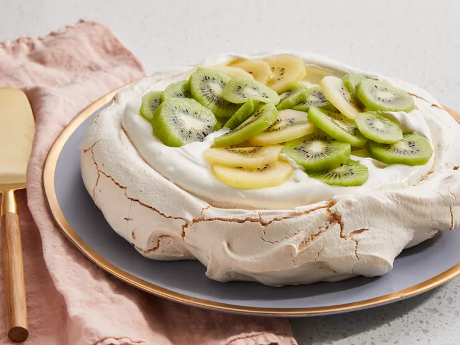

Pavlova is a meringue-based dessert that originated in New Zealand. The elegant dish is named after Anna Pavlova, a Russian ballerina. It has a crisp meringue crust, a soft whipped cream interior, and a fruit topping.
Preheat the oven to 300 degrees F (150 degrees C).
Line a baking sheet with parchment paper; draw a 9-inch circle on the parchment paper.
Beat egg whites in a glass, metal, or ceramic bowl until stiff but not dry. Gradually add sugar, about 1 tablespoon at a time, beating well after each addition. Continue beating until meringue is thick, white, and glossy.
Gently fold in cornstarch, vanilla extract, and lemon juice.
Spoon mixture inside the circle drawn on the parchment paper. Working from the center, spread mixture toward the outside edge and build the edge slightly. This should leave a slight depression in the center.
Bake in the preheated oven until meringue is dry and sounds hollow when tapped, about 1 hour. Cool on a wire rack.
Beat heavy cream in a medium bowl until stiff peaks form; set aside. Remove meringue from the parchment paper and place on a flat serving plate.
Fill center of meringue with whipped cream and top with kiwi slices.
Top with fruit and enjoy!
